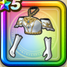

天空の花嫁のドレス上
攻略班 8.0点 / メラ属性耐性+5%ゲマへの耐性+10%イオ属性耐性+5%イオ属性耐性+5%デイン属性耐性+5%【晴れ】スキルの体技ダメージ+2%【レンジャー】デイン属性斬撃・体技ダメージ+5%【魔法戦士】メラ属性斬撃・体技ダメージ+5%スキルの斬撃・体技ダメージ+3％
くわしい特徴
【レベル別習得スキル】 Lv1メラ属性耐性+5% Lv5ゲマへの耐性+10% Lv8イオ属性耐性+5% Lv10【晴れ】スキルの体技ダメージ+2% Lv12【レンジャー】デイン属性斬撃・体技ダメージ+5% Lv12【魔法戦士】メラ属性斬撃・体技ダメージ+5% Lv12スキルの斬撃・体技ダメージ+3％ Lv15イオ属性耐性+5% Lv18デイン属性耐性+5% Lv20守備力+5 Lv23きようさ+10 Lv25こうげき魔力+10 【限界突破スキル】 1凸攻撃力+7 2凸すばやさ+10 3凸守備力+5 4凸さいだいHP+10